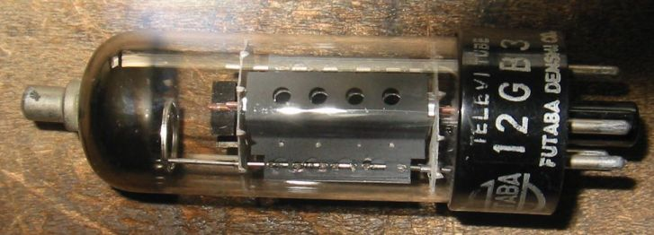
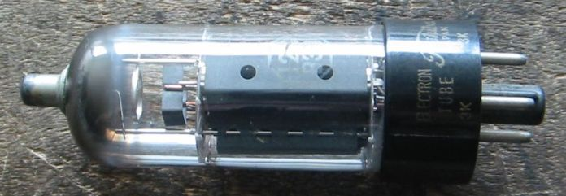
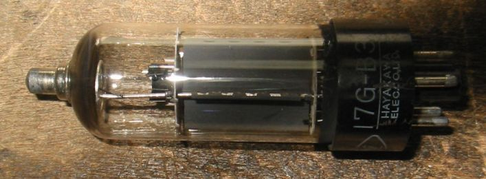
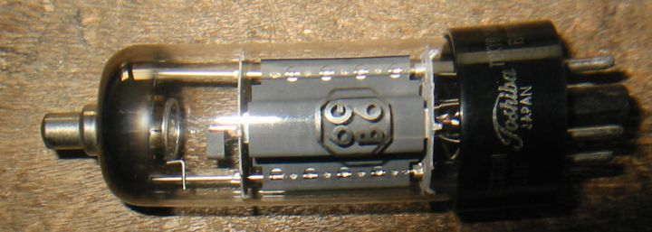
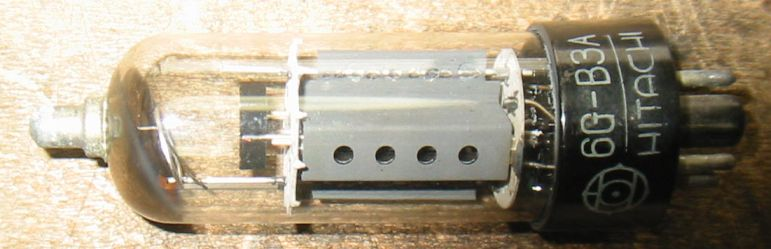
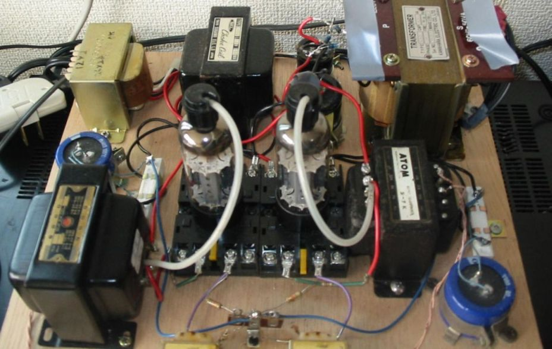

12GB3/12GB3B/17GB3/6GB6
この辺の球はヒーター電圧が違うだけで、特性、定格などは25E5とほとんど同じです。
FUTABA の12GB3

Toshiba の12GB3B
12GB3Bはなかなか見つけられませんでした。

Sharp 17GB3

Toshiba 6GB6
12GB3のヒーター電圧6.3Vのものは6GB3ではなく、6GB6です。6BQ6と互換性があるということになっています。

HITACHI 6G-B3A
6G-B3Aがやっと見つかりました。これはプレート許容損失が13Wに引き上げられています。
Ef/If=6.3V/1.2A、Ep/Pp=550V/13W、Esg/Psg=200V/5W、 Gm=14000μ、μ2=6

12GB3/12GB7 ３結シングルアンプの試作

TV水平出力管(欧州系)のページに戻る